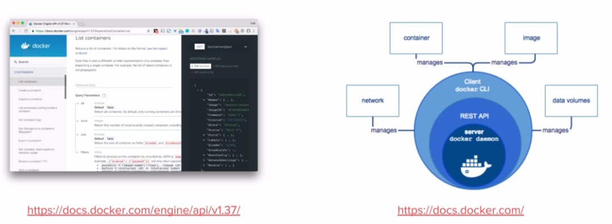
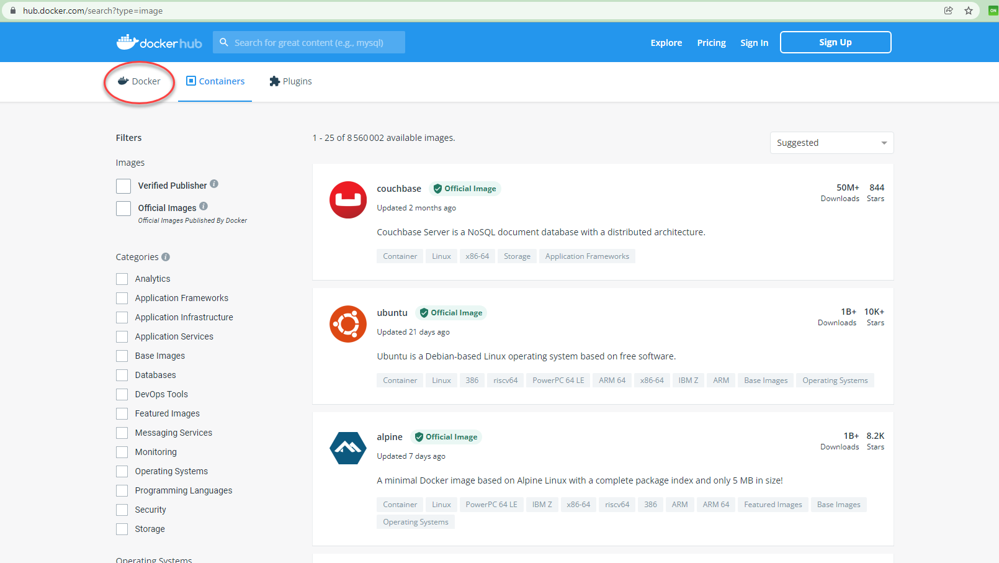

1.0 Introduction¶
Ce cours est découpé en différents chapitres et permet un apprentissage progressif des différents concepts Docker et de leur mise en pratique. On commencera par donner quelques exemples de ce qu’il est possible de faire avec Docker dans la section Quick Wins. Nous ferons références à des concepts utiles comme les containers Linux, les Micro services, le Dev Ops.etc.
Nous aurons un chapitre sur la plateforme Docker, son architecture, son fonctionnement et sa mise en place. Nous verrons comment Docker rend très simple la manipulation des containeurs. Nous parlerons de la notion d’images qui permet de packager une application et ses dépendances. Dans le chapitre sur le stockage, nous apprendrons à utiliser Docker pour que les données puissent persister dans les conteneurs.
Thèmes abordé dans ce cours :
Docker Machine pour créer des hôtes Docker.
Docker compose qui permet de créer des applications en multi container.
Docker Swarm, la solution d’orchestration de Docker qui permet de gérer des applications qui tournent dans des containers.
Le réseau dans Docker.
La sécurité.
Note
Prérequis : Installation de WSL 2 sur windows 10. Afin de pouvoir utiliser des commandes linux dans une console POWERSHELL.
wsl –install -d ubuntu wsl --set-version ubuntu 2
Dans la console, tapez : ubuntu pour basculer dans un environnement Ubuntu.
1.1 Quick Wins¶
Très souvent le premier contact que l’on a avec Docker s’effectue via le Docker Hub accessible sur https://hub.docker.com.

Il s’agit d’un registre (ou registry) dans lequel nous retrouvons beaucoup d’applications packagées dans des images Docker. Cette notion d’image est la base de ce qu’apporte Docker. Voici un exemple de services qui peuvent être contenu dans une image Docker :

Par exemple, grâce à Docker nous pouvons lancer un interpréteur interactif (REPL) pour des langages de programmation comme le Python, le Ruby On Rail ou le Javascript.

Nous avons alors accès à un environnement Python en interactif et c’est le flag -ti qui permet l’interactivité avec le processus du containeur.
De la même manière, nous pouvons lancer un environnement NodeJs, ici contenant le Tag 8.12-alpine.
8.12 est la version de NodeJs et alpine est le nom de la distribution Linux utilisée dans le container.
Par exemple si nous avons besoin d’une base de données MongoDB dans la version 4.0.Nous n’avons qu’à trouver une image disponible dans le Docker Hub.

On peut imaginer avoir besoin de lancer plusieurs containers MongoDB avec des versions différentes. Cela peut être utile pour tester une différence de comportement entre deux versions par exemple.
1.2 Des Stacks complètes¶
Une application fonctionne rarement seule et est souvent constituée d’un ensemble de services. Cet ensemble constitue une Stack applicative. Par exemple, prenons le cas de la Stack Elastic, qui est souvent utilisée pour la gestion des log. Elle est constituée de BEATS et LOGSTASH qui est là pour l’ingestion des logs, de ELASTICSEARCH pour l’analyse et le stockage des logs et KIBANA qui permet de visualiser tout cela.

Il existe une multitude d’applications prêtent à être utilisée avec Docker, accessible en ligne de commande. Nous verrons rapidement comment Docker permet de créer notre propre package d’application pour faciliter : l’installation, l’utilisation et le déploiement.
1.3 Quelques concepts utiles pour les Développeurs¶
1.3.1 Un container Linux, c’est quoi ?¶
Un container est simplement un processus particulier qui tourne sur le système. Il est isolé des autres processus. Il possède sa propre vision du système sur lequel il tourne, on appelle cela les Namespaces. On peut limiter les ressources utilisées par ce processus en utilisant les Controls Groups (ou Cgroups). Le même système peut exécuter plusieurs containers en même temps, c’est d’ailleurs ce qui constitue l’avantage de cette technologie. Le noyau Linux de la machine hôte est partagé entre tous ses containeurs.
1.3.2 Containers Linux : Les Namespaces¶
Les Namespaces sont des technologies Linux qui servent à isoler un processus. Cela permet de limiter ce qu’un processus peut voir. Il existe 6 NameSpaces différents :
Pid : Permet de donner à un processus la vision de lui-même et de ses processus enfant.
Net : Permet de donner au processus son propre réseau privé.
Mount : Permet de donner au processus un système de fichiers privé.
Uts : Permet la gestion du nom de l’hôte.
Ipc : Isole les communications inter processus.
User : permet de faire un mapping entre les utilisateurs de l’hôte et les containeurs.
1.3.2 Containers Linux : Control Groups (cgroups)¶
Les cgroups sont une autre technologie Linux qui va permettre de limiter les ressources qu’un processus va utiliser. Par exemple, pour limiter l’utilisation :
RAM
CPU
des **I/O**(périphériques d’entrées et de sorties)
du Réseau
1.3.3 Containers Linux : VM/Container¶

On compare souvent les containers à des machines virtuelles, car elles permettent d’exécuter des applications de manière isolée.
Mais la virtualisation nécessite un hyperviseur qui s’exécute sur le système d’exploitation de l’hôte et nécessite également que haque machine virtuelle ait son propre système d’exploitation. Alors que l’approche du container est beaucoup plus légère car chacun partage le Kernel Linux de la machine hôte.
La machine virtuelle consomme plus de disque mémoire et de ram que les containers. Cela implique que beaucoup plus de containers peuvent fonctionner sur une même machine hôte.
1.3.4 Architecture micro-services¶
Depuis quelques années, les applications sont développées autour d’une architecture appelée micro-services. Alors qu’avant une application était souvent un gros bloc unique monolithique.

Aujourd’hui, une application est constituée de plusieurs petits composants qui sont des services qui ont leur propre rôle et fonctionnalité. Et c’est l’interconnexion de l’ensemble de ces services qui permettent de définir l’application globale.

Dans une application monolithique, si l’on veut que plusieurs instances de l’application soient déployées il faut créer plusieurs machines virtuelles contenant l’application dans son entièreté.

Alors que dans le contexte d’une application micro-services chaque service peut être déployé indépendamment des autres services, nous avons plusieurs machines virtuelles sur lesquelles les services des différentes applications sont dispatchées.
Exemple d’architecture micro-services : l’application UBER

Chaque processus métier est isolé dans un service :
Paiement
Notification
Facturation
Avantages de l’architecture micro-services :
Découpage de l’application en processus (services) indépendants.
Chacun a sa propre responsabilité métier.
Equipe dédiée pour chaque service.
Plus de liberté de choix de langage.
Mise à jour.
Containers très adaptés pour les micro-services.
Inconvénients :
Nécessite des interfaces bien définies.
Focus sur les tests d’intégration.
Déplace la complexité dans l’orchestration de l’application globale. (Docker SWARM ou Kubernetes).
APPLICATION CLOUD NATIVE
On entend de plus en plus parler d’applications Cloud Native définies par plusieurs critères :
Applications qui suivent une architecture microservices.
Utilisant la technologie des containers.
L’orchestration est faite dynamiquement.
Il existe une branche de la Linux Foundation : la CNCF ( C loud N ative C omputing F oundation ) qui porte de nombreux projets Cloud Native comme :
Kubernetes
Prometheus
Fluentd
1.3.5 Questionnaire de synthèse¶
Quels sont les éléments permettant la création d’un container sous Linux ?
Le kernel Linux et le système de fichiers.
Les namespaces et les control groups.
Les control groups et le système de fichiers.
Les cgroups permettent :
De limiter la vision d’un processus
De limiter les ressources que peux utiliser un processus
D’isoler le système de fichiers d’un processus
De faire un chroot
Un container c’est
Une mini machine virtuelle
Un répertoire sur le système de fichiers
Un processus qui tourne de manière isolée des autres processus
Une technologie créée par Docker
2.0 La plateforme Docker¶
Docker apporte une facilité de développement, de packaging et de déploiement d’applications quelque soit le langage de programmation. Un développeur peut tester une application sur sa machine en imitant les conditions de l’environnement de production tout en nécessitant une configuration minimale. Si l’application est soumise à un fort stresse, Docker peut orchestrer l’allocation d’autres containers. La scalabilité s’effectue très rapidement car un container peut être lancé en quelques secondes.
Note
Cherchez la définition du terme scalabilité.
Docker permet également d’ augmenter le rythme de mise à jour des logiciels.
2.1 Le modèle client/serveur¶
Docker utilise un modèle client/serveur. D’une part nous avons le client Docker, un fichier binaire écrit en GO. Et d’autre part nous avons le Docker Daemon (appelé dockerd), écrit aussi en GO, et qui expose une API REST consommée par le client. Le client envoie des commandes au Docker Daemon pour gérer les containers, les images entre autres.
2.1.1 Le serveur : Dockerd¶
- Processusdockerd
Gestion des images, networks, volumes, cluster, …
Délègue la gestion des containers à containerd.
Expose une API Rest.
Ecoute sur le socket unix
/var/run/docker.sockpar défaut.Peut-être configuré pour écouter sur un socket tcp.
2.1.2 Le client : docker¶
Installé en même temps que dockerd.
Communique avec le daemon local par défaut via
/var/run/docker.sock.Peut être configuré pour communiquer avec un daemon distant.
2.1.3 Concepts essentiels¶
Docker facilite la manipulation des containers Linux. Et cache la complexité sous-jacente.
Introduction de la notion d’image : Format d’un package qui contient une application.
Une image est un template qui sert pour la création d’un container.
Pour créer une image on utilise un Dockerfile. Un fichier texte qui contient une liste d’instructions.
La distribution de ces images se fait par l’intermédiaire d’un Registry.
Docker permet de lancer des containers sur une machine unique ou sur un ensemble d’hôtes regroupées en un cluster Swarm.
Voici un schéma qui montre le fonctionnement global des composants de base de Docker.

Quand on installe la plateforme Docker nous avons donc : un client et un serveur (ou daemon) qui tourne constamment et qui est responsable de la gestion des containers et des images.
2.1.4 Docker Hub¶
Par défaut le daemon Dockerd communique avec le Docker Hub, qui est le Registry officiel de Docker disponible à l’adresse : https://hub.docker.com
Il existe bien entendu beaucoup d’autres Registry que l’on peut utiliser si on le souhaite.

Les images du Docker Hub peuvent être classées en plusieurs catégories.
Les images officielles qui sont validées et que l’on peut utiliser avec confiance.
Les images publiques à utiliser avec précaution.
Les images privées dédiées qu’aux utilisateurs autorisés ( partage d’images au sein d’une entreprise par exemple).
2.1.4 Cluster Swarm¶
Un Cluster Swarm est un ensemble de Docker Host, c’est-à-dire un ensemble de machines sur lesquel le Docker Démon est installé.

Ses machines vont communiquer entres elles afin d’orchestrer des applications et d’assurer qu’elles fonctionnent de la manière voulue.
2.2 Installation de Docker¶
Nous allons voir ici comment installer Docker sur votre environnement.
Rendez-vous tout d’abord dans le Docker hub puis sélectionner l’onglet Explore:

Sélectionnez ensuite l’onglet Docker dans le sous menu:
Sur la gauche vous verrez alors un menu vous permettant de sélectionner différents éléments :
plateforme
système d’exploitation
architecture
Comme nous pouvons le constater, Docker peut être installé sur des systèmes divers: machine de développement, l’infrastructure d’un cloud provider, et même des devices de type Raspberry PI.
Installation pour Windows 10 ou MacOS¶
- Si vous êtes sur MacOS ou Windows 10 (Entreprise ou Pro) vous pouvez installer Docker Desktop, un environnement compatible pour chacune de ces plateformes:
Installation pour Linux¶
Si vous êtes sur Linux, vous pouvez sélectionner la distribution que vous utilisez (Fedora, CentOS, Ubuntu, Debian) et vous obtiendrez alors un lien vers la documentation à suivre pour installer Docker sur la distribution en question.
Pour aller un peu plus vite, vous pouvez également lancer la commande suivante (compatible avec les principales distribution Linux) :
curl -sSL https://get.docker.com | sh
En quelques dizaines de secondes, cela installera la plateforme Docker sur votre distribution. Il sera ensuite nécessaire d’ajouter votre utilisateur dans le groupe docker afin de pouvoir intéragir avec le daemon sans avoir à utiliser sudo (il faudra cependant lancer un nouveau shell afin que ce changement de groupe soit pris en compte.)
sudo usermod -aG docker <UTILISATEUR>
Note
Il est également possible d’installer Docker sur d’autres types d’architecture infrastructure.
Vérification de l’installation¶
Une fois installé, lancez la commande suivante afin de vérifier que tout est fonctionnel :
docker info

3.0 Les containers avec Docker¶
Après avoir présenté la plateforme Docker, nous allons voir comment créer des containers en ligne de commande pour lancer des services en tâche de fond et/ou pour rendre disponible dans un container des repertoires de la machine hôte.
Nous verrons comment lancer un container dans un mode d’accès privilégié, ainsi que les commandes de bases pour la gestion du cycle de vie des containers.
Avant la 1.13, lancer un container s’effectuait avec la commande : Docker Run sans le mot clé container.
Il est toujours possible de le faire.
Mais maintenant les commandes ont été regroupé aux composant auquel elles se rapportent. C’est la raison pour laquelle le mot clé container a été rajouté pour les commandes relatifs à la gestion des containers.
docker container run [OPTIONS] IMAGE [COMMAND] [ARG]
D’autres groupes de commande existent et nous les étudierons plus tard.
3.1 Hello World¶
Lançons notre premier container Hello-World.

Ouvrez un terminal et tapez :
docker container run hello-world

Le client demande au daemon (processus) de lancer un container basé sur l’image Hello-World . Cette image ,n’étant pas disponible en local, est téléchargée et le processus présent dans cette image est automatiquement exécuté.
Et dans le cas de notre Hello-world, il s’agit seulement d’écrire du texte sur la sortie standard : Hello from Docker suivi d’un texte.
Cet exemple est simple mais il met en avant le mécanisme sous-jacent. A la fin du texte on nous demande d’essayer un exemple plus ambitieux, c’est ce que nous allons faire par la suite.
Expérimentez la commande : docker container run hello-world sur votre machine